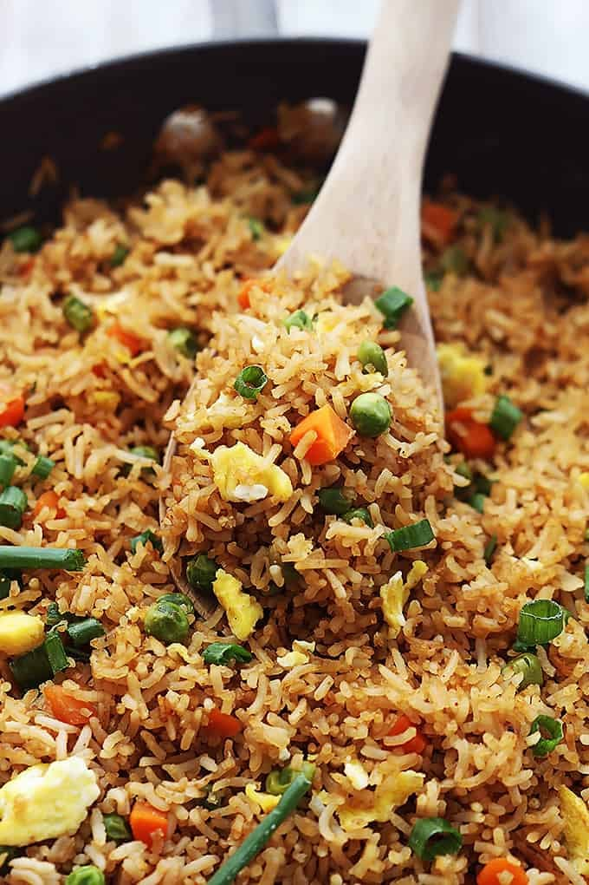

Fried Rice

Description
A simple fried rice with bacon.
Ingredients
- Sesame Oil
- White Rice
- Salt & Pepper
- Green onions
- Bacon
- Eggs
Steps
- Cook rice
- Once rice is cooked, Heat up pan with oil
- Dice the bacon and cook it
- Batter the eggs
- Pour eggs into the pan, once it starts to solidify Put the rice in
- Mix the eggs with the rice and put salt & pepper in
- Put into a bowl